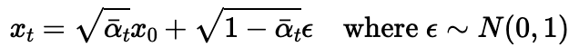
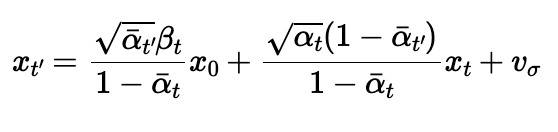
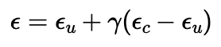

Part 0: Initial Explorations
I started the project by using DeepFloyd to generate some images.
Here are the results, with prompts labeled as the caption for the first row.
On the second row, I varied the amount of inference steps.
Overall, I think the model adhered to the prompts very well.
For all three images, the results were exactly what I was looking for as I wrote the prompt.
num_inference_steps seems to control the level of "detail" in the resulting image.
As I increased this value, there were more details.
There actually seems to be a "sweet spot" in terms of this value; in my opinion, num_inference_steps=50 was the best for the tiger.
num_inference_steps=20 resulted in limited detail (especially for the background), while num_inference_steps=100 resulted in too much "nonsensical" details.


Part 1.1: Implementing the Forward Process
To implement diffusion myself, I started with implementing the forward pass of diffusion (the noise addition part). I followed the following formula (credits to CS180 staff for the picture of the formula).

My function got alpha bar t by indexing into the alphas_cumprod array, sampled the noice using torch.randn_like(im), and simply applied the formula.
In a sense, I "interpolated" between my original image and the noise, though the "weights" for the interpolation were square rooted.
Following are visualizations for the result after applying forward.


Part 1.2: Classical Denoising
I first tried classical denoising (e.g. blurring with a Gaussian) to see how it would work.
I did this by simply using TF.gaussian_blur on the noisy image and a specified kernel size.
After serious effort, I used kernel sizes of 5, 7, and 9 for t=250, 500, and 750, respectively.
Following are the results. They are not great, and I expect neural network denoising to be better.


Here are the noisy images shown again for comparison.
Part 1.3: One-Step Denoising
To implement one-step denoising, I first derived an expression for the predicted original image based on the unet model's predicted noise. I manipulated the following formula (credits to CS180 staff for the picture of the formula).
I isolated x_0 in the expression above. For each image with noise added to it, I put the model through unet, and then treated (part of) the unet output as the noise epsilon, and the noisy image as x_t.


Part 1.4: Iterative Denoising
I then implemented iterative denoising to improve the quality of the outputs of the diffusion workflow. To do so, I followed the following formula (credits to CS180 staff for the pictur of the formula).

I defined timesteps as a list from 990 going to 0, decrementing by 30 each time.
For each iteration, I did the following:
I defined t as timesteps[i], and prev_t as timesteps[i + 1].
I got alpha bar t from alphas_cumprod at t, and alpha bar t prime from alphas_cumprod at prev_t.
I calculated alpha t as alpha bar t divided by alpha bar t prime.
I calculated beta as 1 - alpha t.
I calculated the predicted original image (x_0) the same way as explained in the previous section.
With this, I had all the variables I needed to calculate x t prime (except for the variance part).
I included variance by calling the add_variance function on the resulting image and the predicted variance from unet.
With this, I started the next iteration.
The seed I used happened to result in a fairly "plain" iterative denoising result. Other seeds resulted in more interesting results, like on the course website.


Part 1.5: Diffusion Model Sampling
With the iterative denoising function from the previous part written, I had the ability to generate new images. I did this by passing in noise as the noisy image and starting at 990 (i_start=0) for the time step. Following are the results.


Part 1.6: Classifier-Free Guidance (CFG)
The results from the previous section weren't great.
Many of the images were somewhat natural-seeming, but didn't make much sense.
To combat this, I wrote a function that implements classifier-free guidance.
This was actually quite a similar function as iterative denoising, as described above.
The main distinction was my noise estimate, for which I followed the following formula (credits to CS180 staff for the pictur of the formula).

In this case, I ran the unet twice, once with the conditioned prompt, and once with a "null" prompt.
Their respective noise estimates are epsilon_c and epsilon_u in the formula above.
Gamma is a parameter that I made default to 7.
After calculating this noise, calculation of the predicted original image was the same as described in part 1.3, and the rest of the values are calculated the same way as described in part 1.4.
Notably, I used the predicted variance from the contitioned prompt.


Part 1.7: Image-to-image Translation
With cfg denoising implemented, I gained the ability to edit an image by adding noise to it and then passing it through the previous algorithm.
I did exactly this, making sure I'm adding the right amount of noise for each i_start (I used the forward I implemented as well as iterative_denoise_cfg).
Following are my results.
Campanile

Lion
Water Bottle
Part 1.7.1: Editing Hand-Drawn and Web Images
The procedure explained above works particularly well on hand-drawn images and nonrealistic images. Thus, I drew a car and a christmas tree (the first two rows below) and found a cartoonish picture of a house online. Results are shown below.
Car Drawing


Tree Drawing


House Cartoon


Part 1.7.2: Inpainting
Explanation for this section goes here.


Part 1.7.3: Text-Conditional Image-to-image Translation
Explanation for this section goes here.


Part 1.8: Visual Anagrams
Explanation for this section goes here.


Part 1.9: Hybrid Images
Explanation for this section goes here.